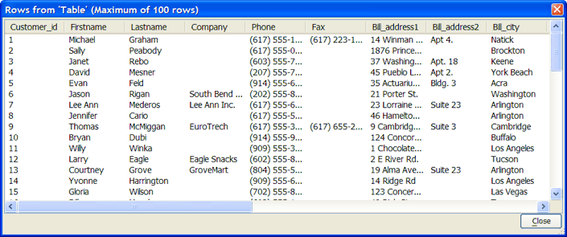

Executing a SQL Query with the SQL::Connection Object
Return to the Interactive window and open a new connection to AlphaSports.MDB.
|
dim conn as SQL::Connection conn.open("{A5API=Access, FileName='C:\Program Files\a5v8\MDBFiles\Alphasports.mdb', UserName='Admin'}") |
If you had defined and saved a named connection string with the contents {A5API=Access, FileName='C:\Program Files\a5v8\MDBFiles\Alphasports.mdb', UserName='Admin'} and the name AlphaSports, you could also execute this statement and achieve the same result.
|
dim conn as SQL::Connection conn.open("::name::alphasports") |
Next, send a SQL SELECT query to the database. Add these 3 lines:
|
dim qry as C qry = "select * from customer" ? conn.Execute(qry) = .T. |
At this point you have selected (not retrieved) all the records in the customer table. The asterisk (*) is a wildcard character that says to retrieve all the fields (or columns) of each record.
Note how the Execute() method returned .T. . Almost all AlphaDAO object methods return TRUE or FALSE, to indicate whether the operation succeeded or failed.
Look at the Data
The SQL::Connection object returns pointers to the selected data in its ResultSet property. This property is, in fact, another AlphaDAO object of type SQL::ResultSet. To view the data, type this line.
|
SQL_ResultSet_Preview(conn.ResultSet) |

Retrieve the Data
If you tried to repeat the previous command, you would discover that it did not return any data. An important fact to remember about a SQL ResultSet is that usually you can read it only once, starting from any point, but moving only towards the end.
If you repeat the Execute() method, you will refresh the ResultSet. This time you can retrieve it into a CR-LF delimited list.
|
dim conn as SQL::Connection dim qry as C conn.open("{A5API=Access,FileName='C:\Program Files\a5v8\MDBFiles\Alphasports.mdb',UserName='Admin'}") qry = "select * from customer" ? conn.Execute(qry) = .T. |
The SQL::ResultSet object has a method named .ToString() that will retrieve its contents into a character list.
|
dim data as C data = conn.resultset.ToString() |
Looking at the data variable, you will see something like this. Tabs separate the columns. You have now retrieved data that you can process with a standard Xbasic script.
|
? data = 1 Michael Graham (617) 555-1445 (617) 223-1919 83 Cambridge St Apt 4. New York NY 01000 14 Winman St. Apt 4. Natick MA 01760 F 2 Sally Peabody (617) 555-0089 1876 Princeton St. London MA 02401-1966 1876 Princeton St. Brockton MA 02401-1966 F 3 Janet Rebo (603) 555-7100 37 Washington Post Road Apt. 18 Keene NH 03431 T ... conn.close() |
Close the connection.
|
conn.close() |
Limitations
Desktop applications only.
See Also